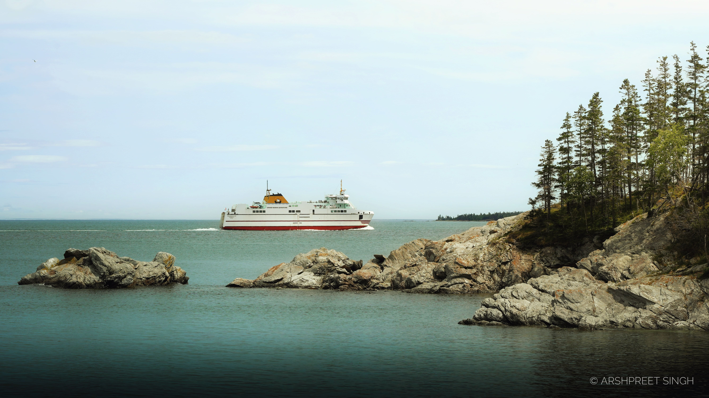

The trip started early — a 7 a.m. rental pickup and a drive to the Blacks Harbour ferry terminal. I cut it close and rolled in about 30 minutes before departure, which meant parking in the non-reserved lane and boarding after everyone else. Ninety minutes later, Grand Manan came into view.
The walk out to Swallowtail Lighthouse starts with the trail opening up ahead — sea on one side, the lighthouse itself in the distance, and the passage cutting through to reach it.

Further along, the passage itself — trees lining the background, a couple of hikers on the boardwalk for scale.

Near the top, another angle felt like Grand Manan distilled into one frame — cliff, sea, and a line of trees in the foreground.

A couple minutes' drive further, along Net Point Trail, the sea opened up from an elevated point where a group of seals were playing in the water below — too far off for a usable shot, but worth remembering. That's also where the ferry shot at the top of this post was taken, lined up through the trees and rocks.
From there, a hike out to the Hole in the Wall — a 12-metre basalt arch — turned into a longer detour than planned when the trail back wasn't the one expected. Instead of heading straight to the parking lot, it led out to Fish Head first, then back.


Late afternoon was a quiet stretch of sea combing along the shore — nothing that made the cut for photos, but a good way to slow the pace down after the hike. Wrapped up the day back at the cottage, watching the sunset from the deck with a hot coffee.
The morning started with a boat out to Machias Seal Island, after a brief scheduling mix-up with the tour organizers got sorted. A small boat drops people at the island's edge before the walk in to the blinds.


From a wooden blind, Atlantic Puffins and Razorbills were close — sometimes as near as three feet. I shot this on a mixed focal range, primarily at the longer end, to isolate each bird from the background.


On the way back, a stop at Seal Island for more seals basking in the sun, then a whale-watching tour where a few humpbacks surfaced — tails and backs breaking the water mid-sea.


The afternoon closed at the Southwest Head lightstation, where volcanic cliffs rise straight out of the ocean.


The last morning rolled in thick with fog along the coastline. A stop at a curvy stretch of road became an impromptu portrait backdrop, using the road's own lines as a guide into the frame — no photos from that one made the post, but it was worth the stop.


A beach known for its magnetic sand came next, though high tide ruled out testing it. Snail eggs turned up scattered along the shoreline instead.

The second stop of the day, before heading to the ferry, was Dark Harbour — rocky cliffs framing the water.


One last sea-combing session turned up a crane hunting and eating a crab — timed at the tighter end of the zoom to isolate the subject and cut out anything competing for attention.


After the ferry back to the mainland, a stop at Irving Nature Park near Saint John, then Reversing Falls to close out the trip.


Across the three days, I moved through the Tamron's full range depending on what the scene called for — wide to hold the whole cliffside or coastline in frame, tight to pick out a single plant clinging to the rock, or a bird mid-hunt. Everything was shot RAW, so there's room to fine-tune light and colour before the strongest frames make it into the main gallery.